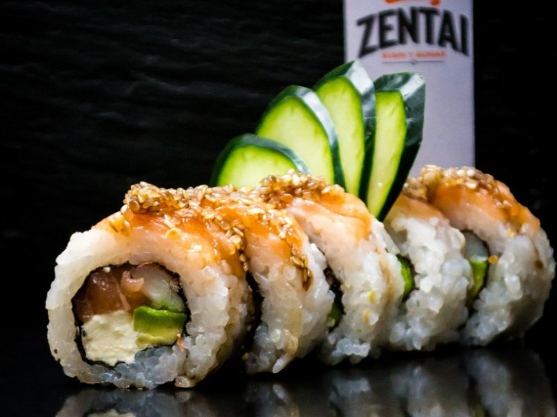
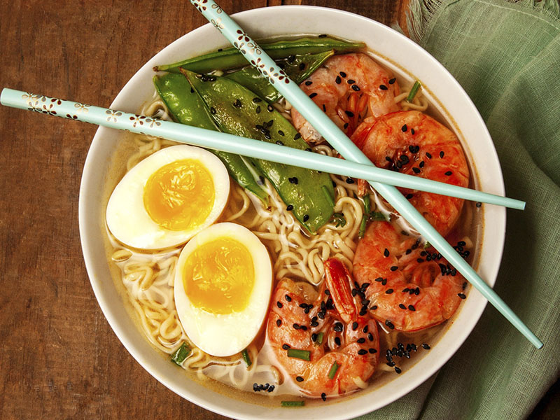
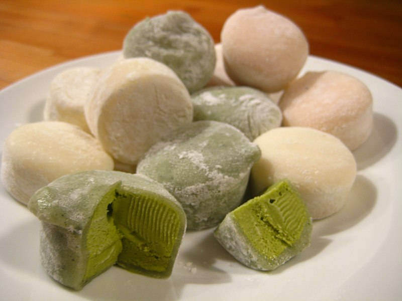

Global Food
Japón
Sushi

Consiste en arroz aderezado con vinagre de arroz, azúcar y sal y combinado con otros ingredientes como pescados crudos, mariscos, verduras, entre otros ingredientes. A pesar de que normalmente se asocia el sushi con el pescado y el marisco, también puede llevar verduras o huevo, o incluso cualquier otro acompañante.
Ramen

Tiene muchas variantes dependiendo de la zona pero la preparación básica consiste en distintos tipos de fideos japoneses servidos en un caldo preparado comúnmente a base de hueso de cerdo o pollo y distintas verduras, sus sabores varían entre la pasta de miso, salsa de soya o sal, contiene diferentes guarniciones como rebanadas de carne de cerdo, algas marinas, menma y cebolleta.
Mochi

Es un postre hecho a base de mochigome, un pequeño grano de arroz glutinoso. El arroz se machaca hasta convertirlo en una pasta y se moldea con la forma deseada. El mochi es un alimento con varios componentes que consiste en polisacáridos, lípidos, proteínas y agua. Este arroz se caracteriza por su falta de amilosa en el almidón y se deriva de medianos o cortos arroces